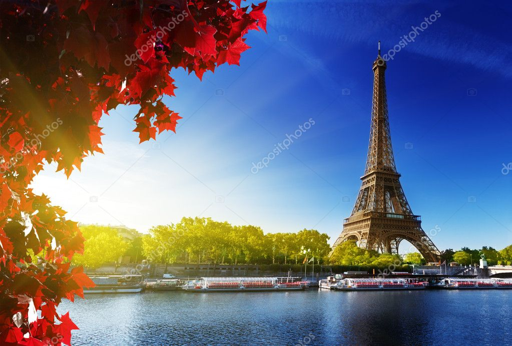

Meus Destinos Favoritos
Conheça os lugares incríveis que já visitei e minhas experiências em cada um

Paris, França
- Torre Eiffel e sua vista deslumbrante
- Museu do Louvre e a Mona Lisa
- Cafés charmosos de Montmartre
- Cruzeiro pelo Rio Sena ao pôr do sol

Tóquio, Japão
- Vistas futuristas de Shibuya
- Templos tradicionais em Asakusa
- Experiências gastronômicas únicas
- Parques tranquilos no meio da metrópole

Rio de Janeiro, Brasil
- Cristo Redentor e Pão de Açúcar
- Praias de Ipanema e Copacabana
- Floresta da Tijuca e trilhas urbanas
- Cultura vibrante e vida noturna